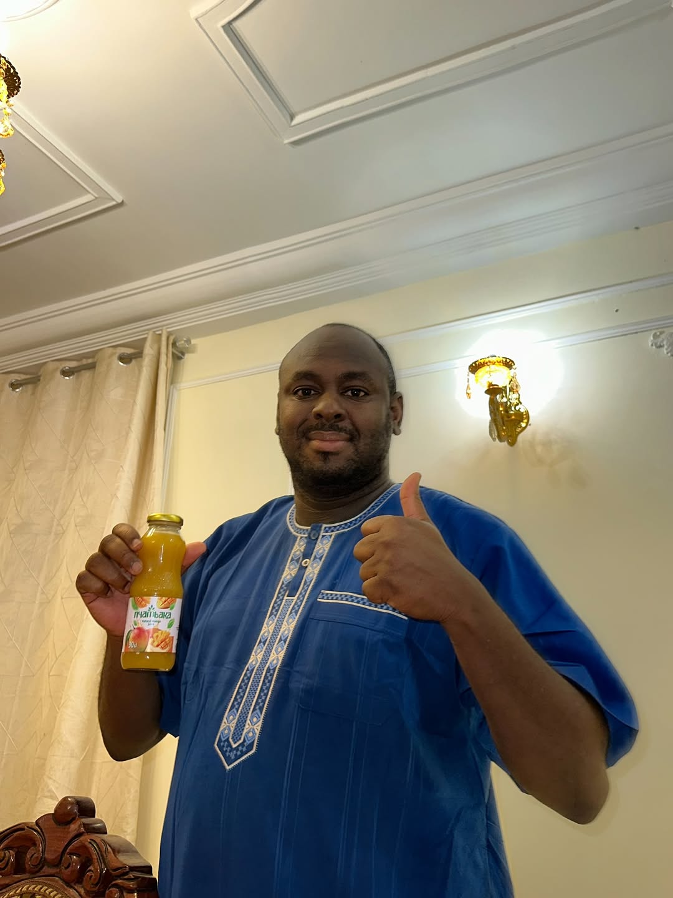
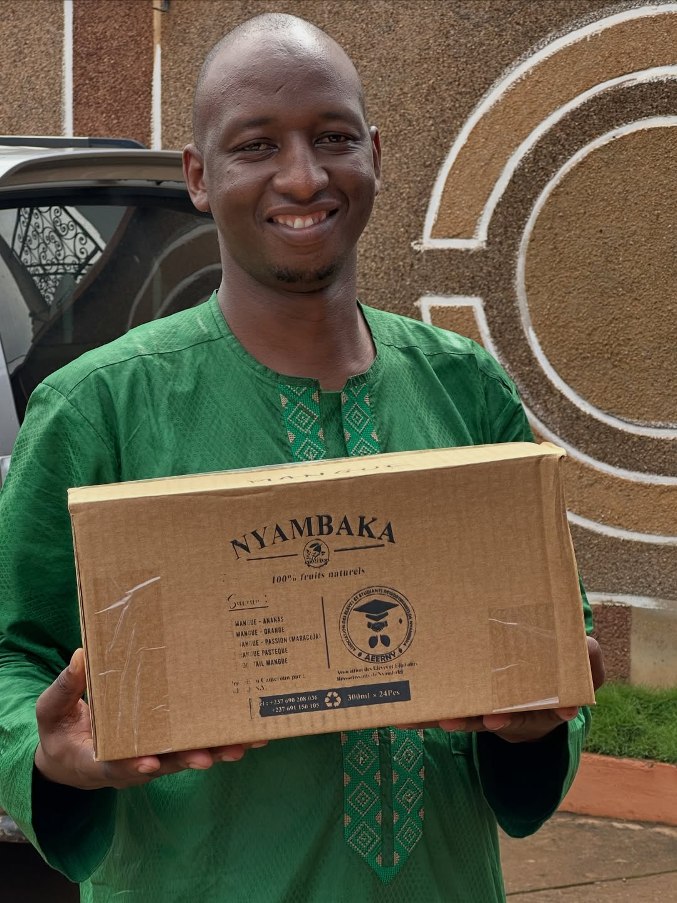

100% Naturel · Sans Conservateurs
Savourez l'Âme
Savourez l'Âme
de Nyambaka
Des mangues naturellement mûries au cœur de Nyambaka — débordant de saveur et riche en vitamines.
Défiler vers le bas ↓
Notre Gamme
Frais. Naturel. Délicieux.
Une variété aujourd'hui — toute une famille tropicale demain. Conçu pour grandir.

Valeurs Nutritionnelles
Sachez Ce Que Vous Buvez
Pour une portion de 250ml de Jus de Mangue AEERNY Original
Valeurs Nutritionnelles
Portion : 250ml (1 verre)
Calories120 kcal
Matières Grasses Totales0,4 g
dont Acides Gras Saturés0,1 g
Glucides28 g
dont Sucres24 g
Fibres Alimentaires1,5 g
Protéines0,8 g
Sodium10 mg
Vitamine C45% AJR
Vitamine A20% AJR
Potassium250 mg
Sans Conservateurs
Artificiels
Artificiels
100% Ingrédients
Naturels
Naturels
Riche en
Vitamines C & A
Vitamines C & A
Vraie Pulpe
de Mangue
de Mangue
Nos Réalisations
Une Histoire de Fierté
Récompenses, couvertures médiatiques et jalons qui marquent notre parcours.
Reconnaissances
Prix et distinctions reçus pour notre engagement envers la qualité naturelle.
Presse & Médias
AEERNY dans les journaux, radios et plateformes digitales du Cameroun.
Impact Communautaire
Des agriculteurs locaux soutenus, des étudiants financés, une communauté renforcée.
Ce Qu'on Dit de Nous
Aimé par Beaucoup
★★★★★
« Le jus de mangue le plus authentique que j'aie jamais goûté. On sent la différence — c'est vrai fruit, pas arôme artificiel. »
★★★★★
« Le jus AEERNY est désormais incontournable lors de nos réunions de famille. Mes enfants refusent toute autre marque ! »
★★★★★
« J'aime savoir que le jus que je bois soutient une communauté locale. Excellent goût avec une belle mission. »
Questions
Foire Aux Questions
Non. Le Jus de Mangue AEERNY Original est élaboré avec 100% d'ingrédients naturels et ne contient absolument aucun conservateur, arôme ou colorant artificiel.
Toutes nos mangues sont cueillies à la main dans les fermes locales de Nyambaka et ses environs, garantissant la fraîcheur et soutenant la communauté agricole locale.
Une portion de 250ml d'AEERNY Original contient environ 120 kcal. Consultez notre tableau nutritionnel complet dans la section Valeurs Nutritionnelles ci-dessus.
Absolument ! Nous acceptons les commandes en gros pour les événements, les détaillants et les distributeurs. Contactez-nous directement sur WhatsApp pour discuter des quantités et des tarifs.
Rien de plus simple ! Cliquez sur le bouton WhatsApp dans la section Contact et envoyez-nous directement votre commande. Nous vous répondons rapidement.
Contactez-Nous
Commander ou Nous Écrire
Que vous souhaitiez passer une commande, devenir distributeur ou simplement en savoir plus — nous sommes là pour vous. Écrivez-nous directement sur WhatsApp, c'est rapide et simple.
Écrire sur WhatsApp📍 Nyambaka, Cameroun
📧 aeerny2020@gmail.com
📞 +237 691 150 105